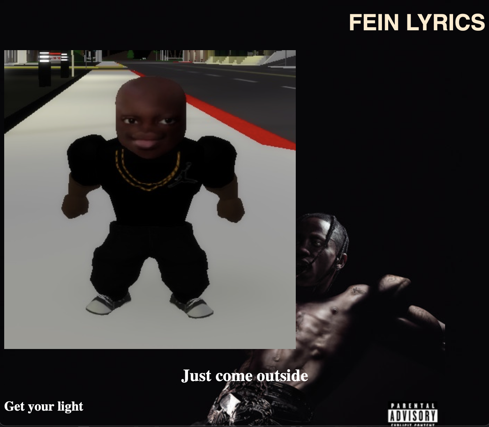

This is a internet meme art that I made by using HTML and CSS coding through the platform Sublime. It is quite simple actually by using the skills that I've learned in class and through w3schools. This piece is named after disgraced rapper Travis Scott's song FE!N, which is an incredible song written by a bad person. The inspiration comes from the FE!N memes that I've seen all over social media so I came up with this idea. There is also a link on the bottom right corner of that page called "gay pop" and it leads to another internet meme art that I made based off JoJo Siwa's controversial song, "Karma." The song is terrible so I wanted to make fun of it. Both of these websites have nothing to do with each other but I just wanted to make some cool memes out of art.